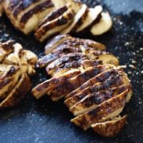

Quick and Easy Jerk Chicken!

Jerk chicken is one of the signature dishes of the Caribbean.
This Super Simple Jerk Chicken can be ready in 10 minutes! Spicy cayenne, warm allspice, and sweet brown sugar make a perfect spice combo.
Ingredients
- 2 teaspoons allspice
- tablespoons brown sugar
- 1/2 teaspoon cumin
- 1/4 teaspoon cloves
- 1/4 teaspoon cloves
- 1/4 teaspoon cinnamon
- 1 teaspoon salt
- 1/2 teaspoon freshly ground black pepper
- 1/8 teaspoon cayenne pepper
- 1 tablespoon canola oil
- 1 1/2 lbs. boneless skinless chicken breasts
Steps
- Combine all the spices, brown sugar, and oil in a small bowl. Preheat a skillet or grill to high heat.
- Rub the spice mixture over the chicken breasts (I had the best luck doing this with my hands). You can layer the spice mixture on the chicken as thick or thin as you like
there should be enough to cover about 4 large chicken breasts or 1 1/2 lbs. Place the spice-rubbed chicken breasts on the hot grill or skillet.
- Cook for about 4 minutes on each side, until the exterior is very deep, dark brown and the inside is no longer pink.
- Remove from heat and let rest for 5-10 minutes to let the juices soak in before cutting.